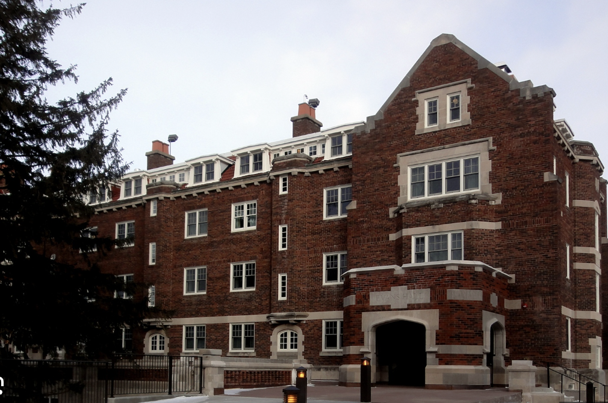
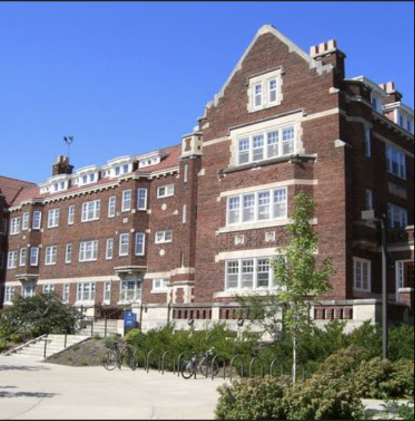

Nourse Hall (1917) and Evans Hall (1927) were built by architects Patton, Holmes, and Flinn. They are both historic dorms, with both being “women’s dorms” on the East side of campus. Nourse is currently the oldest dormitory still in use - and as a current resident myself I can attest that to be true. Nourse and Evans are Collegiate Gothic style dorms, which took 14th-century English collegiate styles to evoke stability, tradition, and academic prestige. Both of the dorms fall under the “Cowling” era. Donald J. Cowling directly stated that a college had a responsibility to look like a college.
